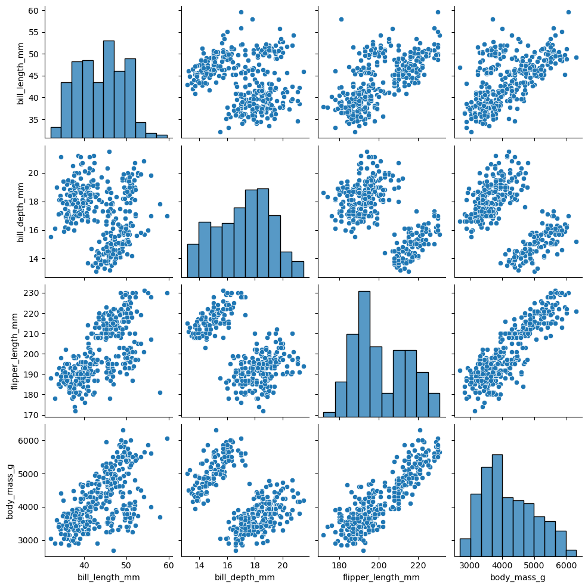
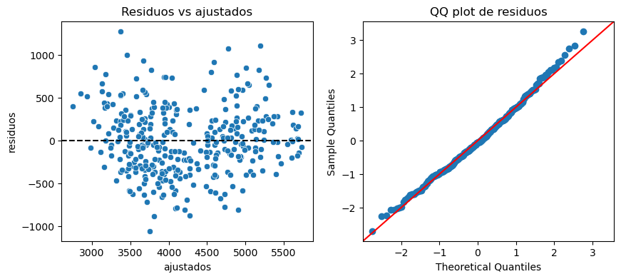
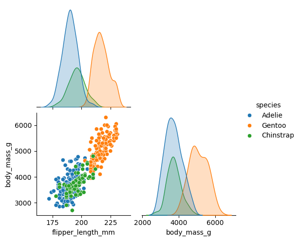
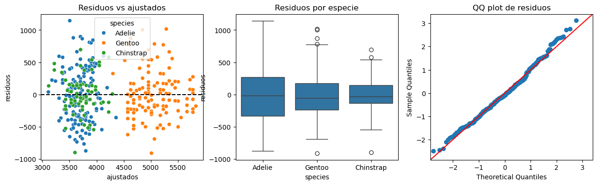

import matplotlib.pyplot as plt
import numpy as np
import pandas as pd
import polars as pl
import pyprojroot
import seaborn as sns
ROOT = pyprojroot.here()3 - Modelos estadísticos con statsmodels
¿Qué es statsmodels?
statsmodels es una de las librerías más completas de Python para análisis estadístico. Ofrece herramientas para estimación, inferencia y diagnóstico en una amplia variedad de métodos.
Es especialmente útil cuando queremos trabajar con regresión lineal clásica, modelos lineales generalizados, modelos discretos, series de tiempo y otras herramientas que resultan familiares desde la estadística aplicada.
Como muchas librerías grandes de Python, statsmodels está organizado en módulos. Distintos submódulos agrupan herramientas para tareas diferentes, por ejemplo modelos generales, fórmulas, tests y diagnósticos.
import statsmodels.api as sm
import statsmodels.formula.api as smfRegresión lineal
Empezamos con una regresión lineal clásica usando palmerpenguins. Vamos a predecir body_mass_g a partir de otras variables numéricas del conjunto de datos.
datos_penguins = pl.read_csv(ROOT / "datos" / "palmerpenguins.csv")
datos_penguins
shape: (344, 9)
| species | island | bill_length_mm | bill_depth_mm | flipper_length_mm | body_mass_g | sex | year | |
|---|---|---|---|---|---|---|---|---|
| i64 | str | str | f64 | f64 | i64 | i64 | str | i64 |
| 1 | "Adelie" | "Torgersen" | 39.1 | 18.7 | 181 | 3750 | "male" | 2007 |
| 2 | "Adelie" | "Torgersen" | 39.5 | 17.4 | 186 | 3800 | "female" | 2007 |
| 3 | "Adelie" | "Torgersen" | 40.3 | 18.0 | 195 | 3250 | "female" | 2007 |
| 4 | "Adelie" | "Torgersen" | null | null | null | null | null | 2007 |
| 5 | "Adelie" | "Torgersen" | 36.7 | 19.3 | 193 | 3450 | "female" | 2007 |
| … | … | … | … | … | … | … | … | … |
| 340 | "Chinstrap" | "Dream" | 55.8 | 19.8 | 207 | 4000 | "male" | 2009 |
| 341 | "Chinstrap" | "Dream" | 43.5 | 18.1 | 202 | 3400 | "female" | 2009 |
| 342 | "Chinstrap" | "Dream" | 49.6 | 18.2 | 193 | 3775 | "male" | 2009 |
| 343 | "Chinstrap" | "Dream" | 50.8 | 19.0 | 210 | 4100 | "male" | 2009 |
| 344 | "Chinstrap" | "Dream" | 50.2 | 18.7 | 198 | 3775 | "female" | 2009 |
En este apunte vamos a usar las siguientes columnas de palmerpenguins:
bill_length_mm: longitud del pico en milímetros.bill_depth_mm: profundidad del pico en milímetros.flipper_length_mm: longitud de la aleta en milímetros.body_mass_g: masa corporal en gramos.species: especie del pingüino; la usamos cuando incorporamos predictores categóricos.
Antes de ajustar el modelo, conviene mirar la relación entre las variables numéricas que vamos a usar.
sns.pairplot(
datos_penguins.drop_nulls(
["bill_length_mm", "bill_depth_mm", "flipper_length_mm", "body_mass_g"]
).select(
"bill_length_mm", "bill_depth_mm", "flipper_length_mm", "body_mass_g"
).to_pandas()
)
Para crear el modelo de regresión lineal, necesitamos construir la matriz de diseño X y el vector de respuestas y.
datos_penguins_num = datos_penguins.drop_nulls(
["bill_length_mm", "bill_depth_mm", "flipper_length_mm", "body_mass_g"]
)
X = sm.add_constant(
datos_penguins_num.select("bill_length_mm", "bill_depth_mm", "flipper_length_mm").to_numpy()
)
y = datos_penguins_num.select("body_mass_g").to_numpy().flatten()print("shape de X:", X.shape)
X[:5]shape de X: (342, 4)array([[ 1. , 39.1, 18.7, 181. ],
[ 1. , 39.5, 17.4, 186. ],
[ 1. , 40.3, 18. , 195. ],
[ 1. , 36.7, 19.3, 193. ],
[ 1. , 39.3, 20.6, 190. ]])print("shape de y:", y.shape)
y[:10]shape de y: (342,)array([3750, 3800, 3250, 3450, 3650, 3625, 4675, 3475, 4250, 3300])Una vez que tenemos X e y, inicializamos un modelo con OLS.
modelo_ols = sm.OLS(y, X)
modelo_ols<statsmodels.regression.linear_model.OLS at 0x7f83253a4e90>Luego aplicamos fit() para obtener un objeto con los resultados del ajuste.
resultado_ols = modelo_ols.fit()
resultado_ols<statsmodels.regression.linear_model.RegressionResultsWrapper at 0x7f8313b314f0>El objeto ajustado concentra casi todo lo que solemos usar en un análisis de regresión.
resultado_ols.summary()| Dep. Variable: | y | R-squared: | 0.761 |
|---|---|---|---|
| Model: | OLS | Adj. R-squared: | 0.759 |
| Method: | Least Squares | F-statistic: | 359.7 |
| Date: | Tue, 19 May 2026 | Prob (F-statistic): | 8.19e-105 |
| Time: | 16:59:48 | Log-Likelihood: | -2526.7 |
| No. Observations: | 342 | AIC: | 5061. |
| Df Residuals: | 338 | BIC: | 5077. |
| Df Model: | 3 | ||
| Covariance Type: | nonrobust |
| coef | std err | t | P>|t| | [0.025 | 0.975] | |
|---|---|---|---|---|---|---|
| const | -6424.7647 | 561.469 | -11.443 | 0.000 | -7529.179 | -5320.351 |
| x1 | 4.1618 | 5.329 | 0.781 | 0.435 | -6.321 | 14.644 |
| x2 | 20.0495 | 13.694 | 1.464 | 0.144 | -6.887 | 46.986 |
| x3 | 50.2692 | 2.477 | 20.293 | 0.000 | 45.397 | 55.142 |
| Omnibus: | 5.263 | Durbin-Watson: | 2.030 |
|---|---|---|---|
| Prob(Omnibus): | 0.072 | Jarque-Bera (JB): | 5.129 |
| Skew: | 0.298 | Prob(JB): | 0.0770 |
| Kurtosis: | 3.065 | Cond. No. | 5.46e+03 |
Notes:
[1] Standard Errors assume that the covariance matrix of the errors is correctly specified.
[2] The condition number is large, 5.46e+03. This might indicate that there are
strong multicollinearity or other numerical problems.
Estimacion de los parámetros:
resultado_ols.paramsarray([-6.42476470e+03, 4.16182047e+00, 2.00495331e+01, 5.02692216e+01])Residuos:
print("shape de los residuos:", resultado_ols.resid.shape)
resultado_ols.resid[:10]shape de los residuos: (342,)array([ 538.38213163, 361.43568832, -656.34648268, -366.88987878,
-52.96734016, 432.25907554, 741.15226683, -307.0097058 ,
543.81555782, -125.47435694])Valores ajustados:
print("shape de los valores ajustados:", resultado_ols.fittedvalues.shape)
resultado_ols.fittedvalues[:10]shape de los valores ajustados: (342,)array([3211.61786837, 3438.56431168, 3906.34648268, 3816.88987878,
3702.96734016, 3192.74092446, 3933.84773317, 3782.0097058 ,
3706.18444218, 3425.47435694])Y algunos diagnósticos:
resultado_ols.get_influence().summary_frame().head()| dfb_const | dfb_x1 | dfb_x2 | dfb_x3 | cooks_d | standard_resid | hat_diag | dffits_internal | student_resid | dffits | |
|---|---|---|---|---|---|---|---|---|---|---|
| 0 | 0.064965 | 0.005695 | -0.005188 | -0.070324 | 0.004209 | 1.374603 | 0.008831 | 0.129752 | 1.376420 | 0.129923 |
| 1 | 0.054881 | -0.000214 | -0.029491 | -0.045757 | 0.001564 | 0.922112 | 0.007306 | 0.079107 | 0.921907 | 0.079090 |
| 2 | 0.006473 | 0.053290 | -0.032919 | -0.020714 | 0.003230 | -1.672224 | 0.004599 | -0.113670 | -1.676699 | -0.113974 |
| 3 | 0.041533 | 0.078561 | -0.065442 | -0.055103 | 0.002977 | -0.938880 | 0.013330 | -0.109129 | -0.938715 | -0.109110 |
| 4 | 0.007667 | 0.006332 | -0.012947 | -0.005832 | 0.000067 | -0.135610 | 0.014287 | -0.016326 | -0.135413 | -0.016303 |
También podemos mirar algunos diagnósticos de residuos.
print(resultado_ols.resid.shape)
resultado_ols.resid[:5](342,)array([ 538.38213163, 361.43568832, -656.34648268, -366.88987878,
-52.96734016])diagnostico_ols = pl.DataFrame(
{"ajustados": resultado_ols.fittedvalues, "residuos": resultado_ols.resid}
)
fig, axes = plt.subplots(1, 2, figsize=(10, 4))
sns.scatterplot(data=diagnostico_ols, x="ajustados", y="residuos", ax=axes[0])
axes[0].axhline(0, color="black", linestyle="--")
axes[0].set_title("Residuos vs ajustados")
sm.qqplot(resultado_ols.resid, line="45", fit=True, ax=axes[1])
axes[1].set_title("QQ plot de residuos");
También podemos pedir predicciones con intervalos para la media condicional y para una nueva observación.
resultado_ols.get_prediction(X[:3]).summary_frame()| mean | mean_se | mean_ci_lower | mean_ci_upper | obs_ci_lower | obs_ci_upper | |
|---|---|---|---|---|---|---|
| 0 | 3211.617868 | 36.970000 | 3138.897607 | 3284.338130 | 2434.378345 | 3988.857392 |
| 1 | 3438.564312 | 33.626334 | 3372.421066 | 3504.707557 | 2661.912543 | 4215.216080 |
| 2 | 3906.346483 | 26.680291 | 3853.866156 | 3958.826810 | 3130.738834 | 4681.954132 |
La interfaz de fórmulas
La API de fórmulas usa una sintaxis similar a la de R. Suele ser más cómoda cuando hay interacciones o variables categóricas.
datos_penguins_formula = datos_penguins.drop_nulls(
["bill_length_mm", "bill_depth_mm", "flipper_length_mm", "body_mass_g", "species"]
)
modelo_formula = smf.ols(
"body_mass_g ~ flipper_length_mm",
data=datos_penguins_formula.to_pandas(),
)La construcción del modelo y el ajuste siguen separados, igual que con sm.OLS.
modelo_formula<statsmodels.regression.linear_model.OLS at 0x7f83247d0d10>resultado_formula = modelo_formula.fit()
resultado_formula<statsmodels.regression.linear_model.RegressionResultsWrapper at 0x7f8312751a00>resultado_formula.summary()| Dep. Variable: | body_mass_g | R-squared: | 0.759 |
|---|---|---|---|
| Model: | OLS | Adj. R-squared: | 0.758 |
| Method: | Least Squares | F-statistic: | 1071. |
| Date: | Tue, 19 May 2026 | Prob (F-statistic): | 4.37e-107 |
| Time: | 16:59:49 | Log-Likelihood: | -2528.4 |
| No. Observations: | 342 | AIC: | 5061. |
| Df Residuals: | 340 | BIC: | 5069. |
| Df Model: | 1 | ||
| Covariance Type: | nonrobust |
| coef | std err | t | P>|t| | [0.025 | 0.975] | |
|---|---|---|---|---|---|---|
| Intercept | -5780.8314 | 305.815 | -18.903 | 0.000 | -6382.358 | -5179.305 |
| flipper_length_mm | 49.6856 | 1.518 | 32.722 | 0.000 | 46.699 | 52.672 |
| Omnibus: | 5.634 | Durbin-Watson: | 2.190 |
|---|---|---|---|
| Prob(Omnibus): | 0.060 | Jarque-Bera (JB): | 5.585 |
| Skew: | 0.313 | Prob(JB): | 0.0613 |
| Kurtosis: | 3.019 | Cond. No. | 2.89e+03 |
Notes:
[1] Standard Errors assume that the covariance matrix of the errors is correctly specified.
[2] The condition number is large, 2.89e+03. This might indicate that there are
strong multicollinearity or other numerical problems.
resultado_formula.paramsIntercept -5780.831358
flipper_length_mm 49.685566
dtype: float64Antes de incorporar interacciones, podemos mirar cómo cambian las nubes de puntos al distinguir observaciones por especie.
sns.pairplot(
datos_penguins_formula.select("flipper_length_mm", "body_mass_g", "species").to_pandas(),
hue="species",
corner=True,
);
Ahora agregamos diferencias por especie en el intercepto y en la pendiente asociada a flipper_length_mm.
modelo_especie = smf.ols(
"body_mass_g ~ flipper_length_mm * species",
data=datos_penguins_formula.to_pandas(),
)modelo_especie<statsmodels.regression.linear_model.OLS at 0x7f8312f68f20>resultado_especie = modelo_especie.fit()
resultado_especie<statsmodels.regression.linear_model.RegressionResultsWrapper at 0x7f83247e31d0>resultado_especie.summary()| Dep. Variable: | body_mass_g | R-squared: | 0.790 |
|---|---|---|---|
| Model: | OLS | Adj. R-squared: | 0.786 |
| Method: | Least Squares | F-statistic: | 252.2 |
| Date: | Tue, 19 May 2026 | Prob (F-statistic): | 2.22e-111 |
| Time: | 16:59:49 | Log-Likelihood: | -2505.2 |
| No. Observations: | 342 | AIC: | 5022. |
| Df Residuals: | 336 | BIC: | 5045. |
| Df Model: | 5 | ||
| Covariance Type: | nonrobust |
| coef | std err | t | P>|t| | [0.025 | 0.975] | |
|---|---|---|---|---|---|---|
| Intercept | -2535.8368 | 879.468 | -2.883 | 0.004 | -4265.793 | -805.880 |
| species[T.Chinstrap] | -501.3590 | 1523.459 | -0.329 | 0.742 | -3498.078 | 2495.360 |
| species[T.Gentoo] | -4251.4438 | 1427.332 | -2.979 | 0.003 | -7059.077 | -1443.811 |
| flipper_length_mm | 32.8317 | 4.627 | 7.095 | 0.000 | 23.730 | 41.934 |
| flipper_length_mm:species[T.Chinstrap] | 1.7417 | 7.856 | 0.222 | 0.825 | -13.711 | 17.194 |
| flipper_length_mm:species[T.Gentoo] | 21.7908 | 6.941 | 3.139 | 0.002 | 8.137 | 35.444 |
| Omnibus: | 5.822 | Durbin-Watson: | 2.534 |
|---|---|---|---|
| Prob(Omnibus): | 0.054 | Jarque-Bera (JB): | 5.758 |
| Skew: | 0.317 | Prob(JB): | 0.0562 |
| Kurtosis: | 3.034 | Cond. No. | 2.07e+04 |
Notes:
[1] Standard Errors assume that the covariance matrix of the errors is correctly specified.
[2] The condition number is large, 2.07e+04. This might indicate that there are
strong multicollinearity or other numerical problems.
Podemos comparar el R^2 del modelo base con el del modelo que incorpora especie.
pl.DataFrame({
"modelo": ["sin especie", "con especie"],
"r2": [resultado_formula.rsquared, resultado_especie.rsquared],
"r2_ajustado": [resultado_formula.rsquared_adj, resultado_especie.rsquared_adj],
})
shape: (2, 3)
| modelo | r2 | r2_ajustado |
|---|---|---|
| str | f64 | f64 |
| "sin especie" | 0.758993 | 0.758284 |
| "con especie" | 0.789577 | 0.786446 |
resultado_especie.paramsIntercept -2535.836802
species[T.Chinstrap] -501.358972
species[T.Gentoo] -4251.443811
flipper_length_mm 32.831690
flipper_length_mm:species[T.Chinstrap] 1.741704
flipper_length_mm:species[T.Gentoo] 21.790812
dtype: float64En el modelo con especie conviene revisar si los residuos siguen mostrando estructura por grupo.
diagnostico_especie = pd.DataFrame(
{
"ajustados": resultado_especie.fittedvalues,
"residuos": resultado_especie.resid,
"species": datos_penguins_formula["species"].to_numpy(),
}
)
fig, axes = plt.subplots(1, 3, figsize=(15, 4))
sns.scatterplot(
data=diagnostico_especie,
x="ajustados",
y="residuos",
hue="species",
ax=axes[0],
)
axes[0].axhline(0, color="black", linestyle="--")
axes[0].set_title("Residuos vs ajustados")
sns.boxplot(data=diagnostico_especie, x="species", y="residuos", ax=axes[1])
axes[1].set_title("Residuos por especie")
sm.qqplot(resultado_especie.resid, line="45", fit=True, ax=axes[2])
axes[2].set_title("QQ plot de residuos");
Para predecir, pasamos un DataFrame con las covariables necesarias.
nuevos_pinguinos = pl.DataFrame(
{
"bill_length_mm": [39.5, 48.5, 46.0],
"bill_depth_mm": [17.4, 15.0, 17.5],
"flipper_length_mm": [186, 220, 210],
"species": ["Adelie", "Gentoo", "Chinstrap"],
}
)
predicciones_especie = pl.DataFrame(
resultado_especie.get_prediction(nuevos_pinguinos.to_pandas()).summary_frame()
)
pl.concat([nuevos_pinguinos, predicciones_especie], how="horizontal")
shape: (3, 10)
| bill_length_mm | bill_depth_mm | flipper_length_mm | species | mean | mean_se | mean_ci_lower | mean_ci_upper | obs_ci_lower | obs_ci_upper |
|---|---|---|---|---|---|---|---|---|---|
| f64 | f64 | i64 | str | f64 | f64 | f64 | f64 | f64 | f64 |
| 39.5 | 17.4 | 186 | "Adelie" | 3570.857492 | 35.273766 | 3501.472251 | 3640.242732 | 2838.576597 | 4303.138386 |
| 48.5 | 15.0 | 220 | "Gentoo" | 5229.669802 | 36.447733 | 5157.975311 | 5301.364293 | 4497.166493 | 5962.173111 |
| 46.0 | 17.5 | 210 | "Chinstrap" | 4223.216937 | 100.594672 | 4025.34225 | 4421.091623 | 3467.852529 | 4978.581344 |
Modelos lineales generalizados
Los modelos lineales generalizados extienden la regresión lineal a respuestas no gaussianas. En statsmodels, el patrón general sigue siendo el mismo: mostrar los datos, construir el modelo, ajustar y usar el objeto de resultados para inspección y predicción.
Regresión logística
El dataset spector registra si un estudiante mejoró su nota (GRADE) junto con algunas covariables explicativas. Ajustamos un modelo logístico para obtener la probabilidad de mejora.
datos_spector = pl.from_pandas(sm.datasets.spector.load_pandas().data)
datos_spector
shape: (32, 4)
| GPA | TUCE | PSI | GRADE |
|---|---|---|---|
| f64 | f64 | f64 | f64 |
| 2.66 | 20.0 | 0.0 | 0.0 |
| 2.89 | 22.0 | 0.0 | 0.0 |
| 3.28 | 24.0 | 0.0 | 0.0 |
| 2.92 | 12.0 | 0.0 | 0.0 |
| 4.0 | 21.0 | 0.0 | 1.0 |
| … | … | … | … |
| 2.67 | 24.0 | 1.0 | 0.0 |
| 3.65 | 21.0 | 1.0 | 1.0 |
| 4.0 | 23.0 | 1.0 | 1.0 |
| 3.1 | 21.0 | 1.0 | 0.0 |
| 2.39 | 19.0 | 1.0 | 1.0 |
En este ejemplo usamos las siguientes columnas:
GRADE: indica si la nota mejoró (1) o no (0).GPA: promedio del estudiante.TUCE: puntaje en un examen de economía.PSI: indicador de participación en el programa.
Primero construimos el modelo, dejando definida la fórmula y los datos, pero sin estimar todavía los parámetros.
modelo_logit = smf.logit("GRADE ~ GPA + TUCE + PSI", data=datos_spector.to_pandas())modelo_logit<statsmodels.discrete.discrete_model.Logit at 0x7f8308167440>Después ajustamos el modelo. El resultado contiene coeficientes, errores estándar, medidas de ajuste y métodos para predicción.
resultado_logit = modelo_logit.fit(disp=False)
resultado_logit<statsmodels.discrete.discrete_model.BinaryResultsWrapper at 0x7f8232f43380>resultado_logit.summary()| Dep. Variable: | GRADE | No. Observations: | 32 |
|---|---|---|---|
| Model: | Logit | Df Residuals: | 28 |
| Method: | MLE | Df Model: | 3 |
| Date: | Tue, 19 May 2026 | Pseudo R-squ.: | 0.3740 |
| Time: | 16:59:50 | Log-Likelihood: | -12.890 |
| converged: | True | LL-Null: | -20.592 |
| Covariance Type: | nonrobust | LLR p-value: | 0.001502 |
| coef | std err | z | P>|z| | [0.025 | 0.975] | |
|---|---|---|---|---|---|---|
| Intercept | -13.0213 | 4.931 | -2.641 | 0.008 | -22.687 | -3.356 |
| GPA | 2.8261 | 1.263 | 2.238 | 0.025 | 0.351 | 5.301 |
| TUCE | 0.0952 | 0.142 | 0.672 | 0.501 | -0.182 | 0.373 |
| PSI | 2.3787 | 1.065 | 2.234 | 0.025 | 0.292 | 4.465 |
resultado_logit.paramsIntercept -13.021347
GPA 2.826113
TUCE 0.095158
PSI 2.378688
dtype: float64Si exponenciamos los coeficientes del modelo logístico, obtenemos los odds ratios.
np.exp(resultado_logit.params)Intercept 0.000002
GPA 16.879715
TUCE 1.099832
PSI 10.790732
dtype: float64La predicción por default devuelve probabilidades estimadas para GRADE = 1.
muestra_spector = datos_spector.head()
probabilidades = pl.DataFrame(
{"probabilidad": resultado_logit.predict(muestra_spector.to_pandas())}
)
pl.concat([muestra_spector, probabilidades], how="horizontal")
shape: (5, 5)
| GPA | TUCE | PSI | GRADE | probabilidad |
|---|---|---|---|---|
| f64 | f64 | f64 | f64 | f64 |
| 2.66 | 20.0 | 0.0 | 0.0 | 0.026578 |
| 2.89 | 22.0 | 0.0 | 0.0 | 0.059501 |
| 3.28 | 24.0 | 0.0 | 0.0 | 0.18726 |
| 2.92 | 12.0 | 0.0 | 0.0 | 0.025902 |
| 4.0 | 21.0 | 0.0 | 1.0 | 0.569893 |
Regresión Poisson
El conjunto de datos randhie contiene un conteo de visitas médicas (mdvis). Es un ejemplo natural para un GLM Poisson.
datos_randhie = pl.from_pandas(sm.datasets.randhie.load_pandas().data)
datos_randhie
shape: (20_190, 10)
| mdvis | lncoins | idp | lpi | fmde | physlm | disea | hlthg | hlthf | hlthp |
|---|---|---|---|---|---|---|---|---|---|
| i64 | f64 | i64 | f64 | f64 | f64 | f64 | i64 | i64 | i64 |
| 0 | 4.61512 | 1 | 6.907755 | 0.0 | 0.0 | 13.73189 | 1 | 0 | 0 |
| 2 | 4.61512 | 1 | 6.907755 | 0.0 | 0.0 | 13.73189 | 1 | 0 | 0 |
| 0 | 4.61512 | 1 | 6.907755 | 0.0 | 0.0 | 13.73189 | 1 | 0 | 0 |
| 0 | 4.61512 | 1 | 6.907755 | 0.0 | 0.0 | 13.73189 | 1 | 0 | 0 |
| 0 | 4.61512 | 1 | 6.907755 | 0.0 | 0.0 | 13.73189 | 1 | 0 | 0 |
| … | … | … | … | … | … | … | … | … | … |
| 2 | 0.0 | 0 | 5.377498 | 0.0 | 0.1442925 | 10.57626 | 0 | 0 | 0 |
| 0 | 0.0 | 0 | 5.377498 | 0.0 | 0.1442925 | 10.57626 | 0 | 0 | 0 |
| 8 | 3.258096 | 0 | 6.874819 | 8.006368 | 0.1442925 | 10.57626 | 0 | 0 | 0 |
| 8 | 3.258096 | 0 | 5.156178 | 6.542472 | 0.1442925 | 10.57626 | 0 | 0 | 0 |
| 6 | 3.258096 | 0 | 6.620073 | 8.006368 | 0.1442925 | 10.57626 | 0 | 0 | 0 |
En este modelo usamos:
mdvis: número de visitas médicas.lncoins: logaritmo del coseguro.idp: indicador de plan con deducible individual.lpi: logaritmo de un incentivo de participación.fmde: medida vinculada al gasto médico esperado.physlm: indicador de limitación física.disea: número de enfermedades crónicas.hlthg,hlthf,hlthp: indicadores de estado de salud autopercibido.
Primero construimos el modelo. El objeto guarda la familia elegida, la función de enlace y la especificación del predictor lineal.
modelo_poisson = smf.glm(
"mdvis ~ lncoins + idp + lpi + fmde + physlm + disea + hlthg + hlthf + hlthp",
data=datos_randhie.to_pandas(),
family=sm.families.Poisson(),
)modelo_poisson<statsmodels.genmod.generalized_linear_model.GLM at 0x7f8312fd07a0>Al ajustar con fit(), obtenemos un resultado análogo al de otros modelos de statsmodels.
resultado_poisson = modelo_poisson.fit()
resultado_poisson<statsmodels.genmod.generalized_linear_model.GLMResultsWrapper at 0x7f8312785ee0>resultado_poisson.summary()| Dep. Variable: | mdvis | No. Observations: | 20190 |
|---|---|---|---|
| Model: | GLM | Df Residuals: | 20180 |
| Model Family: | Poisson | Df Model: | 9 |
| Link Function: | Log | Scale: | 1.0000 |
| Method: | IRLS | Log-Likelihood: | -62420. |
| Date: | Tue, 19 May 2026 | Deviance: | 83934. |
| Time: | 16:59:50 | Pearson chi2: | 1.27e+05 |
| No. Iterations: | 5 | Pseudo R-squ. (CS): | 0.3422 |
| Covariance Type: | nonrobust |
| coef | std err | z | P>|z| | [0.025 | 0.975] | |
|---|---|---|---|---|---|---|
| Intercept | 0.7004 | 0.011 | 62.741 | 0.000 | 0.678 | 0.722 |
| lncoins | -0.0525 | 0.003 | -18.216 | 0.000 | -0.058 | -0.047 |
| idp | -0.2471 | 0.011 | -23.272 | 0.000 | -0.268 | -0.226 |
| lpi | 0.0353 | 0.002 | 19.302 | 0.000 | 0.032 | 0.039 |
| fmde | -0.0346 | 0.002 | -21.439 | 0.000 | -0.038 | -0.031 |
| physlm | 0.2717 | 0.012 | 22.200 | 0.000 | 0.248 | 0.296 |
| disea | 0.0339 | 0.001 | 60.098 | 0.000 | 0.033 | 0.035 |
| hlthg | -0.0126 | 0.009 | -1.366 | 0.172 | -0.031 | 0.005 |
| hlthf | 0.0541 | 0.015 | 3.531 | 0.000 | 0.024 | 0.084 |
| hlthp | 0.2061 | 0.026 | 7.843 | 0.000 | 0.155 | 0.258 |
resultado_poisson.paramsIntercept 0.700353
lncoins -0.052535
idp -0.247087
lpi 0.035290
fmde -0.034578
physlm 0.271714
disea 0.033941
hlthg -0.012635
hlthf 0.054056
hlthp 0.206115
dtype: float64Si exponenciamos los coeficientes del modelo Poisson, obtenemos los incidence/rate ratios.
np.exp(resultado_poisson.params)Intercept 2.014463
lncoins 0.948821
idp 0.781073
lpi 1.035920
fmde 0.966013
physlm 1.312212
disea 1.034524
hlthg 0.987444
hlthf 1.055544
hlthp 1.228895
dtype: float64Para un GLM Poisson, get_prediction() devuelve la media esperada del conteo junto con intervalos para esa media.
muestra_randhie = datos_randhie.head()
pred_poisson = pl.DataFrame(
resultado_poisson.get_prediction(muestra_randhie.to_pandas()).summary_frame()
)
pl.concat([muestra_randhie, pred_poisson], how="horizontal")
shape: (5, 14)
| mdvis | lncoins | idp | lpi | fmde | physlm | disea | hlthg | hlthf | hlthp | mean | mean_se | mean_ci_lower | mean_ci_upper |
|---|---|---|---|---|---|---|---|---|---|---|---|---|---|
| i64 | f64 | i64 | f64 | f64 | f64 | f64 | i64 | i64 | i64 | f64 | f64 | f64 | f64 |
| 0 | 4.61512 | 1 | 6.907755 | 0.0 | 0.0 | 13.73189 | 1 | 0 | 0 | 2.479438 | 0.045983 | 2.390931 | 2.57122 |
| 2 | 4.61512 | 1 | 6.907755 | 0.0 | 0.0 | 13.73189 | 1 | 0 | 0 | 2.479438 | 0.045983 | 2.390931 | 2.57122 |
| 0 | 4.61512 | 1 | 6.907755 | 0.0 | 0.0 | 13.73189 | 1 | 0 | 0 | 2.479438 | 0.045983 | 2.390931 | 2.57122 |
| 0 | 4.61512 | 1 | 6.907755 | 0.0 | 0.0 | 13.73189 | 1 | 0 | 0 | 2.479438 | 0.045983 | 2.390931 | 2.57122 |
| 0 | 4.61512 | 1 | 6.907755 | 0.0 | 0.0 | 13.73189 | 1 | 0 | 0 | 2.479438 | 0.045983 | 2.390931 | 2.57122 |
Regresión Gamma
El dataset ccard contiene gastos promedio positivos. Una familia Gamma con link log permite modelar una respuesta continua, positiva y asimétrica.
datos_ccard = pl.from_pandas(sm.datasets.ccard.load_pandas().data)
datos_ccard_positivos = datos_ccard.filter(pl.col("AVGEXP") > 0)
datos_ccard_positivos
shape: (72, 5)
| AVGEXP | AGE | INCOME | INCOMESQ | OWNRENT |
|---|---|---|---|---|
| f64 | f64 | f64 | f64 | f64 |
| 124.98 | 38.0 | 4.52 | 20.4304 | 1.0 |
| 9.85 | 33.0 | 2.42 | 5.8564 | 0.0 |
| 15.0 | 34.0 | 4.5 | 20.25 | 1.0 |
| 137.87 | 31.0 | 2.54 | 6.4516 | 0.0 |
| 546.5 | 32.0 | 9.79 | 95.8441 | 1.0 |
| … | … | … | … | … |
| 68.38 | 43.0 | 2.4 | 5.76 | 0.0 |
| 474.15 | 33.0 | 6.0 | 36.0 | 1.0 |
| 234.05 | 25.0 | 3.6 | 12.96 | 0.0 |
| 451.2 | 26.0 | 5.0 | 25.0 | 1.0 |
| 251.52 | 46.0 | 5.5 | 30.25 | 1.0 |
En este ejemplo usamos:
AVGEXP: gasto promedio observado.AGE: edad.INCOME: ingreso.OWNRENT: indicador de vivienda propia o alquilada.
Primero construimos el objeto del modelo con su familia y su link.
modelo_gamma = smf.glm(
"AVGEXP ~ AGE + INCOME + OWNRENT",
data=datos_ccard_positivos.to_pandas(),
family=sm.families.Gamma(sm.families.links.Log()),
)modelo_gamma<statsmodels.genmod.generalized_linear_model.GLM at 0x7f8232f684d0>Después ajustamos el modelo para obtener el objeto de resultados.
resultado_gamma = modelo_gamma.fit()
resultado_gamma<statsmodels.genmod.generalized_linear_model.GLMResultsWrapper at 0x7f8232f02540>resultado_gamma.summary()| Dep. Variable: | AVGEXP | No. Observations: | 72 |
|---|---|---|---|
| Model: | GLM | Df Residuals: | 68 |
| Model Family: | Gamma | Df Model: | 3 |
| Link Function: | Log | Scale: | 1.0497 |
| Method: | IRLS | Log-Likelihood: | -463.42 |
| Date: | Tue, 19 May 2026 | Deviance: | 61.270 |
| Time: | 16:59:50 | Pearson chi2: | 71.4 |
| No. Iterations: | 24 | Pseudo R-squ. (CS): | 0.2369 |
| Covariance Type: | nonrobust |
| coef | std err | z | P>|z| | [0.025 | 0.975] | |
|---|---|---|---|---|---|---|
| Intercept | 4.2628 | 0.577 | 7.384 | 0.000 | 3.131 | 5.394 |
| AGE | -0.0017 | 0.019 | -0.085 | 0.932 | -0.040 | 0.036 |
| INCOME | 0.3344 | 0.083 | 4.013 | 0.000 | 0.171 | 0.498 |
| OWNRENT | 0.1810 | 0.298 | 0.607 | 0.544 | -0.404 | 0.766 |
resultado_gamma.paramsIntercept 4.262792
AGE -0.001653
INCOME 0.334433
OWNRENT 0.181038
dtype: float64Si exponenciamos los coeficientes del modelo Gamma con link log, obtenemos efectos multiplicativos sobre la media.
np.exp(resultado_gamma.params)Intercept 71.007983
AGE 0.998349
INCOME 1.397148
OWNRENT 1.198461
dtype: float64En este caso las predicciones corresponden al gasto medio esperado bajo la familia Gamma con link log.
muestra_ccard = datos_ccard_positivos.head()
pred_gamma = pl.DataFrame(
resultado_gamma.get_prediction(muestra_ccard.to_pandas()).summary_frame()
)
pl.concat([muestra_ccard, pred_gamma], how="horizontal")
shape: (5, 9)
| AVGEXP | AGE | INCOME | INCOMESQ | OWNRENT | mean | mean_se | mean_ci_lower | mean_ci_upper |
|---|---|---|---|---|---|---|---|---|
| f64 | f64 | f64 | f64 | f64 | f64 | f64 | f64 | f64 |
| 124.98 | 38.0 | 4.52 | 20.4304 | 1.0 | 362.372537 | 73.86153 | 243.028326 | 540.323252 |
| 9.85 | 33.0 | 2.42 | 5.8564 | 0.0 | 151.046508 | 27.045619 | 106.340543 | 214.547029 |
| 15.0 | 34.0 | 4.5 | 20.25 | 1.0 | 362.344046 | 72.056834 | 245.385341 | 535.049108 |
| 137.87 | 31.0 | 2.54 | 6.4516 | 0.0 | 157.752096 | 25.442024 | 114.999146 | 216.399205 |
| 546.5 | 32.0 | 9.79 | 95.8441 | 1.0 | 2132.50089 | 1071.412445 | 796.577443 | 5708.873742 |
Otras cosas que se pueden hacer con statsmodels
Además de estos ejemplos, statsmodels también incluye herramientas para:
- modelos de efectos mixtos;
- series de tiempo;
- otros modelos discretos, como probit o modelos para conteos más flexibles;
- estimación robusta de errores;
- distintos métodos de inferencia;
- pruebas de diagnóstico, residuos, medidas de influencia y comparación de modelos.
Para seguir explorando, la documentación oficial es un muy buen punto de partida:
- documentación general: https://www.statsmodels.org/stable/
- guía de usuario: https://www.statsmodels.org/stable/user-guide.html
- ejemplos: https://www.statsmodels.org/stable/examples/index.html
- referencia de la API: https://www.statsmodels.org/stable/api.html